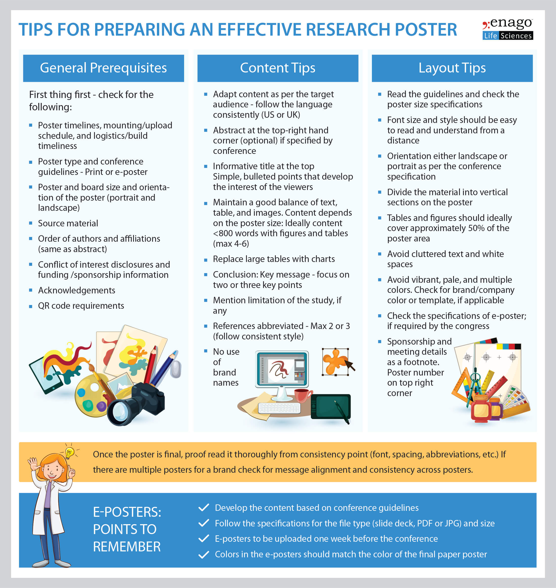

- Why present a poster at a conference?
- Showcase your work!
- Develop and practice your presentation skills
- Get feedback and suggestions from
experts in your field.
- Build your network, meet and
connect with other attendees, potential mentors,
employers (industry or graduate school), etc.
- Enhance your CV and portfolio
- and many more...
Pre-workshop Poster Tutorial
- To help student participants who have yet to make/present a poster, we will hold a pre-workshop poster preparation and practice session about two months before the workshop. We will walk you through all the steps of how to make a poster, present a poster, and offer practice opportunities.
- Tentative dates:
- July 19 - Pre-workshop poster tutorial
- August 20 - Draft poster review and feedback
- August 30 - Final poster review and practice
- September 6 - Poster printing
- All the meetings will be conducted
via Zoom.
- Participants who successfully
finished the poster tutorial will receive free poster printing at
the end. You will submit the file, and we will print
it for you. The poster will be available for pickup
during the main career workshop.
Poster Session
- The career workshop will feature a
student poster session on Saturday afternoon, after
the main sessions of the AMS sectional meeting. See
the schedule
page for more details. Please plan to stop earlier
to set up your poster.
- Please bring your 48" by 36" poster. If you
attend the poster tutorial and send us your poster
file, your poster will be available for pickup
onsite. We will provide binder clips so that your
poster can be quickly attached to the poster board.
- Poster awards: Our plenary speakers and faculty members
will be judges for poster award competitions. One to
two poster award winners will be selected based on
the evaluation criteria below, and the award will be
announced at the award ceremony on Sunday.
Each winner will win a monetary prize and an award
certificate!
- Methodology: novelty and significance
- Poster quality: style, organization, and visuals
- Presentation quality: clear presentation
Resources
- Examples of student posters in Math by MAA
- Poster Preparation:
- Poster video tutorial (in LaTeX) made by MATHFORALL, including the tips to do a poster presentation
- LaTex (Beamer) Poster Sample written by Dawn Nelson (located at the bottom of the page)
- Create a poster in PowerPoint by Brian Pfohl in Psychology.
- Tips (image below by Enago)
